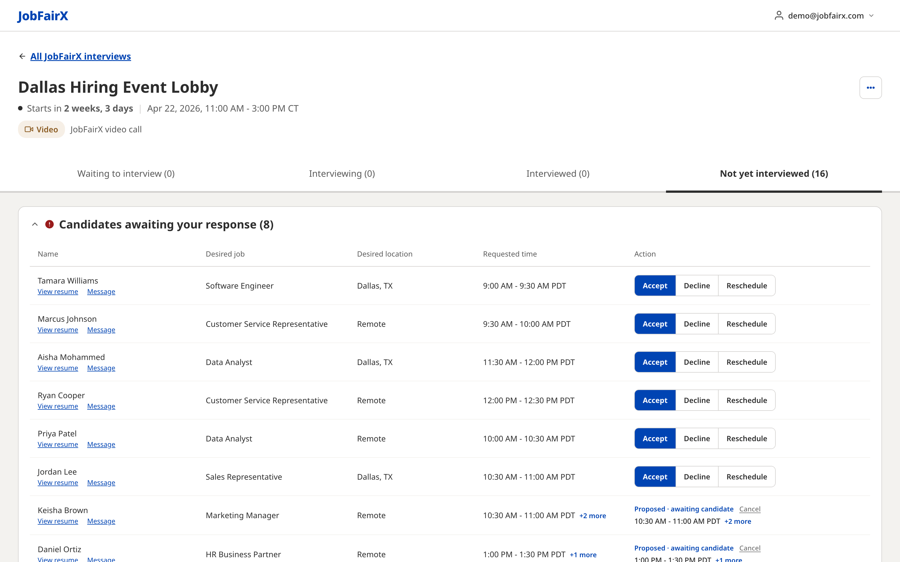
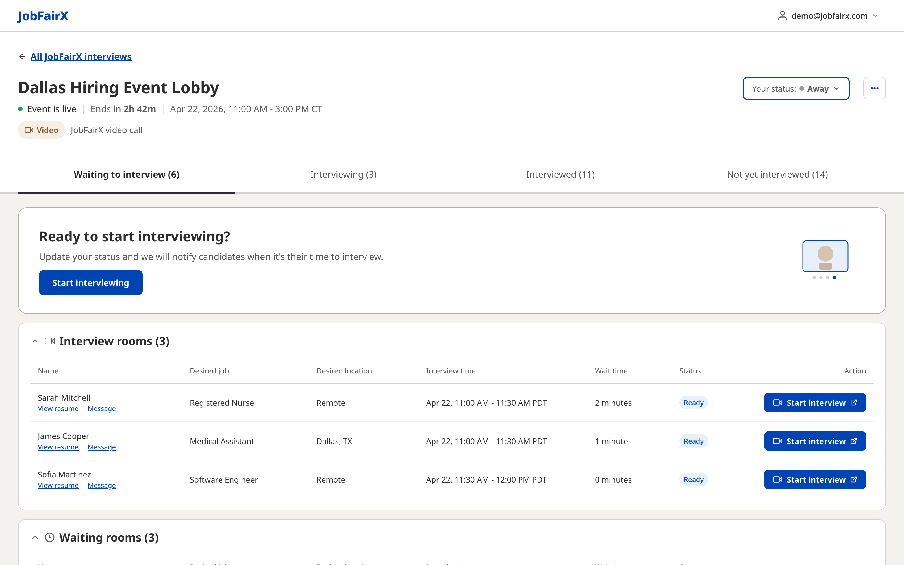
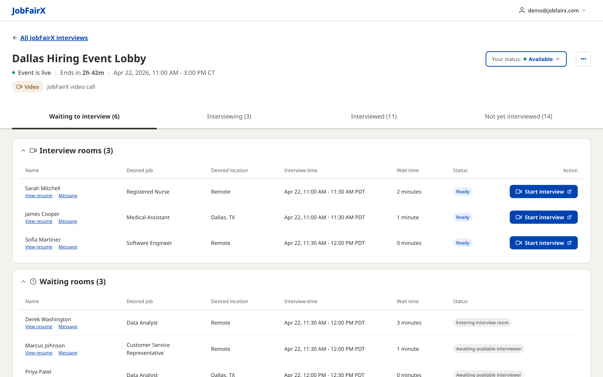
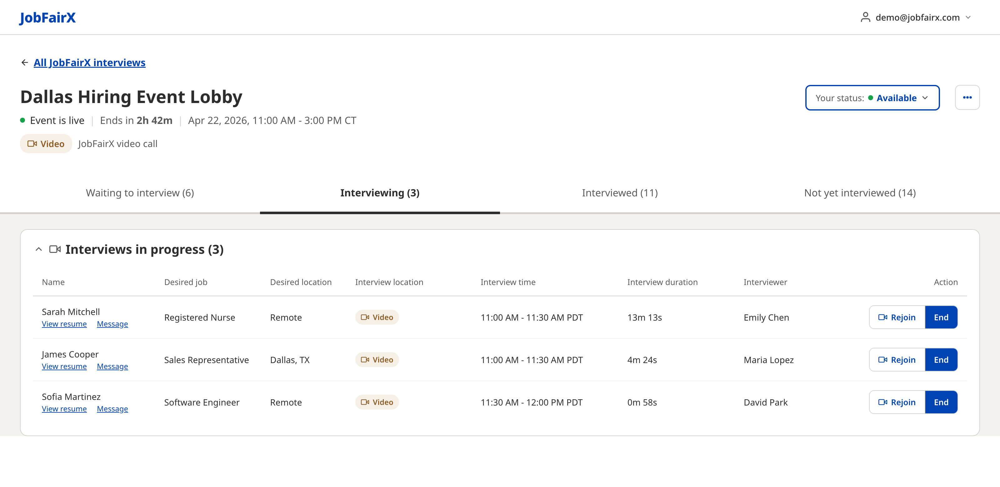
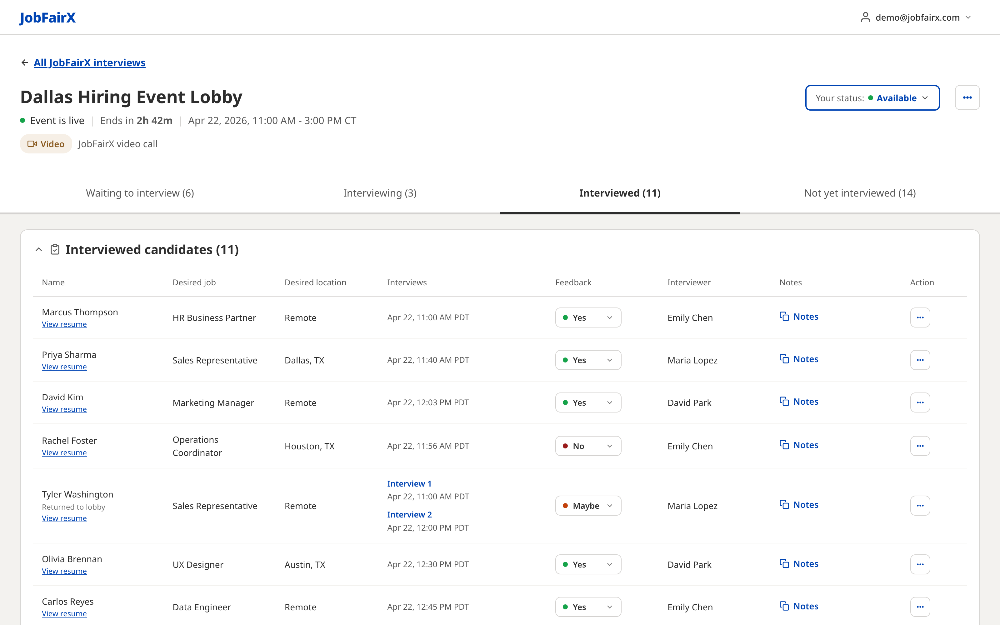
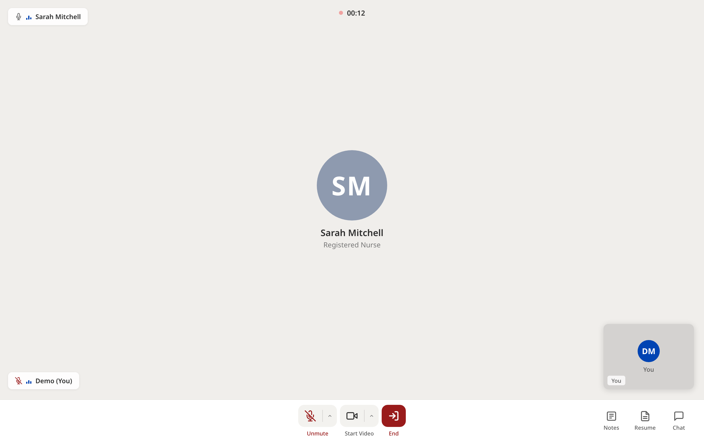
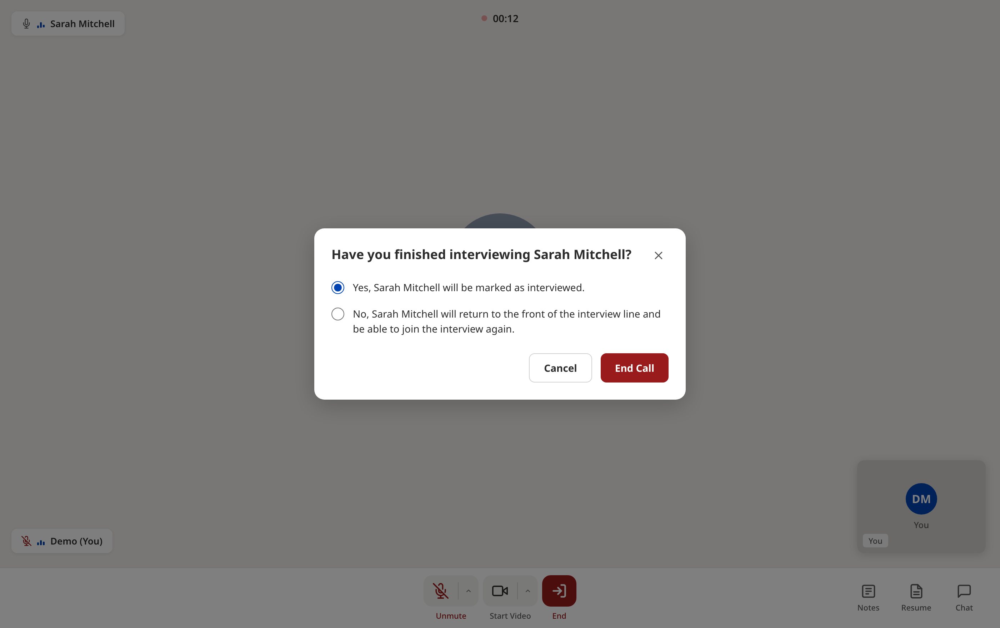
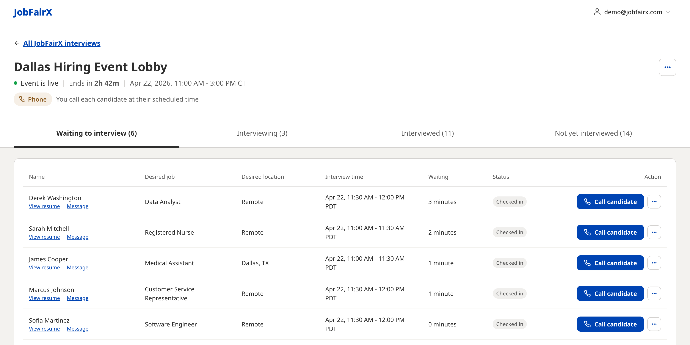

Running your event day
What the lobby shows before your event, what changes the moment it goes live, and how to run an interview from start to finish.
The lobby is where the event day happens. You can reach it from Go to lobby on an event row, from Manage candidates, or from an interview row.
The header names the event and carries the essentials: a countdown or a live indicator, the date and times, and the interview location chip with its details. All JobFairX interviews at the top left takes you back. Four rooms run underneath, each with a count: Waiting to interview, Interviewing, Interviewed and Not yet interviewed.
Before the event
Ahead of the day, the header shows how long until the event starts and the first three rooms sit at zero, because nobody can be waiting yet. The lobby opens on Not yet interviewed, which is the pre-event work list, split into two sections:
- Candidates awaiting your response with Accept, Decline and Reschedule per row. Where you have already proposed a different time, the row reads Proposed · awaiting candidate with a Cancel option.
- Candidates with upcoming interviews with Reschedule and Cancel per row.

When the event goes live
On event day the header switches to Event is live with a countdown to the finish, the room counts fill in, and the lobby opens on Waiting to interview instead. Two things appear that were not there before: a Your status control in the header, and a card asking Ready to start interviewing?

Selecting Start interviewing switches your status to Available, confirms it with a message, and removes the prompt. You can change it either way at any point from the Your status dropdown, which holds Available and Away. Set yourself to Away when you step out, so candidates are not called forward for an interviewer who is not there.

Waiting to interview
On a video event this room is split in two. Interview rooms lists people who are ready, each with a Wait time, a Ready status and a Start interview button that opens the interview in a new tab. Waiting rooms lists the queue behind them, with statuses such as Entering interview room and Awaiting available interviewer and no action button, because it is not their turn yet.
Interviewing
Interviews in progress shows every interview your team currently has open, with a running Interview duration and the Interviewer named on each row. Two actions sit on the right: Rejoin, which takes you back into a call you have stepped out of, and End.

Interviewed
Interviewed candidates is the record of the day so far: every interview a person attended, the Feedback rating, who interviewed them, and their Notes. Someone who was sent back for a second conversation is marked Returned to lobby and shows both interviews stacked in one row.

Running an interview
Start interview opens the interview screen in a new tab, with the candidate's name and a running timer at the top and a tile for each participant. Along the bottom sit the microphone and camera controls, which read Unmute and Start Video while you are muted with your camera off, and a red End. Three panels open on the right: Notes for typing as you go, Resume so you can read it without leaving the call, and Chat.

End asks what should happen next, and the choice is the important part:
- Yes, and the candidate is marked as interviewed.
- No, and the candidate returns to the front of the interview line and can join again. This is the option to use when a call drops or you need a colleague to speak to them.

After the call ends, the platform asks whether you would recommend moving forward with the candidate, offering Yes, Maybe or No plus a comments box. That answer is the Feedback rating you see everywhere else. A short call-quality question follows.
Phone and in-person events
The lobby follows the interview format you chose for the event.
- On a phone event the header reads “You call each candidate at their scheduled time”, candidates show a Checked in status, and the action button is Call candidate.
- On an in-person event the header carries the venue address, a Parking & arrival link and a Check-in QR code link. Candidates show Checked in when they scan the code on arrival, and the action is Start interview. In-person events and the check-in tool covers the code and what candidates see.
- Both replace the split interview-rooms and waiting-rooms layout with a single queue, and neither shows the Your status control.

Row actions during the event
Lobby rows carry View resume under the candidate's name, and Message alongside it everywhere except the Interviewed room. A … menu on the row holds the actions you need when a plan changes on the day. Which ones appear depends on where the candidate is: between them they cover Mark as interviewed, Didn't show, Message and Schedule follow-up interview.
When the event ends
Once the event finishes, the lobby shows Interviewing has ended and points you at the event report: “You can schedule follow-up interviews, review feedback, and update notes in your completed event report.” The lobby stays open, so you can still read back through the day.
What to do next
Where to go from here.
- Navigating the hiring platform A guided tour of the dashboard and the left navigation.
- Adding interviewers Bringing colleagues onto an event so they can interview with you.
- Creating and editing events Adding jobs, choosing how you interview, and setting capacity.
- Event performance summary Reviewing how an event did and exporting the people who signed up.
- Hiring event best practices Staffing your slots, preparing interviewers, and following up afterwards.
Still need help?
If something in the lobby does not match what you see here, contact JobFairX support and include your event name and date.